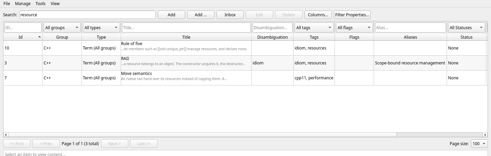
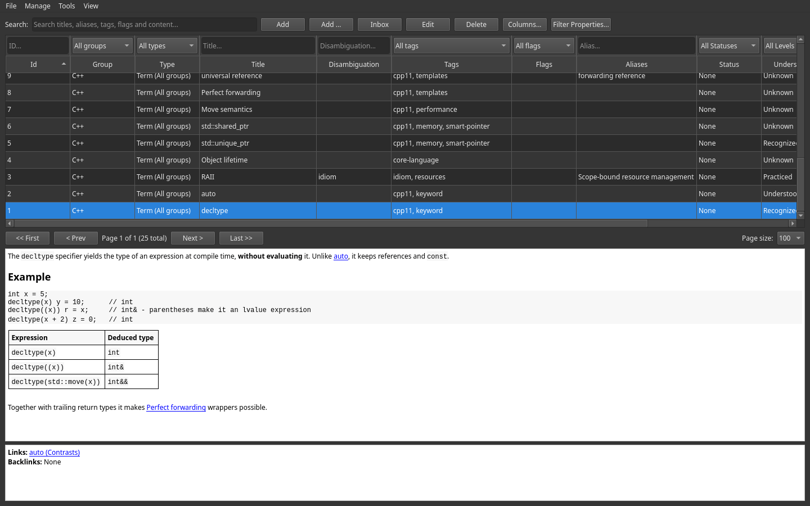

Search & navigation
A knowledge base is only as good as your ability to find things in it. Lexicon combines free-text search, filters above the table columns, sorting, and pagination.
Free-text search
The Search box at the top of the main window matches against six fields at once:
- title
- disambiguation
- aliases
- tags
- flags
- the Markdown content
Because aliases are searched too, a well-maintained alias list means you find Resource Acquisition Is Initialization just by typing RAII.
The content is searched with a full-text index that ignores diacritics, so prilis finds Příliš and naive finds naïve. An item whose title matches exactly comes first, then the other title matches, then the ones found by their content. The web client and the Android app search the same way — the server runs the same query.
An item found through its content says why: under its title the list shows the piece of content around the match, with … where it was cut. An item found by its title, an alias or a tag needs no explanation and gets none.

Search-to-create If a search comes up empty, click Add — the new item's title is prefilled from your search text. Searching and capturing become one motion.
Filters
The filter row sits above the column names in the item table. Each control filters the column directly below it; filters also combine with the separate Search box.
| Filter | Narrows to |
|---|---|
Id | One exact item ID |
Group | Items in one group (e.g. only Databases) |
Type | Items assigned a specific type, or all items with All types. The choices follow the selected group; global types are available in every group. Selecting a type also displays its field values as columns, adds filters for those values, and uses that type for new items. |
Title / Disambiguation / Aliases | Items containing the entered text in that column |
Tags | Items carrying a specific tag |
Flags | Items carrying a specific flag |
Status | None / Draft / Completed |
Understanding | One of the five understanding levels |
Pinned | Pinned or unpinned items only |
Click Filter Properties... to add, edit, remove, or clear key/value filters. Every listed filter must match. Keys match exactly without case sensitivity; values match contained text, also without case sensitivity. Leave the value blank to match any value for that key. Click Apply to update the table or Cancel to discard dialog changes.
Some practical combinations:
- "What should I study next?" — Group = C++, Understanding = Recognized
- "What's unfinished?" — Status = Draft
- "My review queue" — Flag = review
- "The essentials" — Pinned = yes
Sorting & pagination
Click any column header in the item table to sort by that column; click again to reverse the order. Combined with the pagination bar (<< First, < Prev, Next >, Last >>, and a Page size selector), the table stays fast even with thousands of items.
Hide attributes hides the Disambiguation, Tags, Flags, Aliases, Status, Understanding, and Pinned columns; Hide values hides the value columns of the selected type. Both blocks are visible by default, each button turns into Show ... while its columns are hidden, and your choice is saved in the database. Hiding columns clears their filters.
Global overviews
Three read-only overviews show your entire vocabulary with usage counts:
View → All tags...View → All flags...View → All aliases...
Use them to audit your labeling: spot near-duplicate tags (sql vs. SQL), find flags that were never cleaned up, and check which aliases actually get used.
Light & dark mode
Switch the application theme from the menu:
View → Light modeView → Dark mode
Your preference is persisted between sessions. The web client has the same two entries under its own View menu and starts in the dark theme; the Android app follows the phone.
